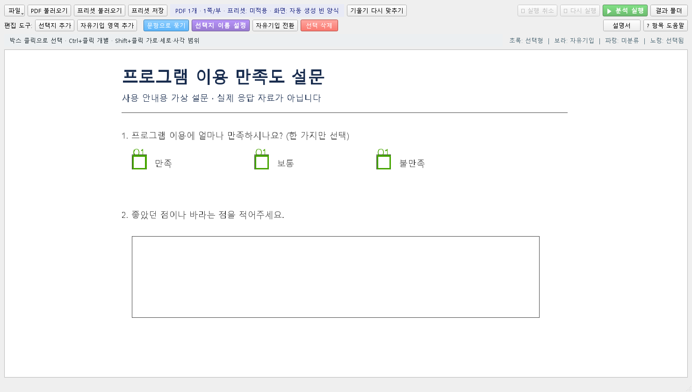
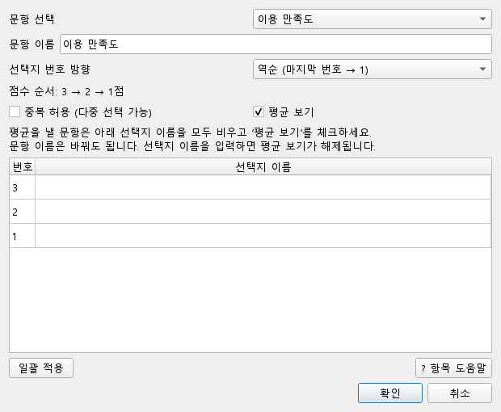
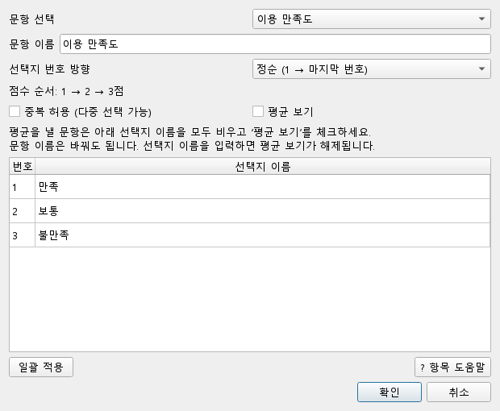
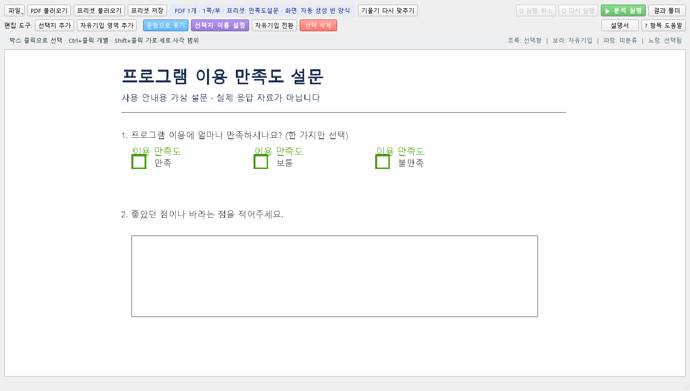

설문지 자동 분석기 / 설명서
화면을 보며, 한 단계씩.
PDF를 열고, 문항을 확인하고, 결과를 검수하면 끝납니다.
프로그램을 옆에 열어 두고 아래 순서대로 눌러 보세요.
아래는 현재 프로그램을 직접 캡처한 화면입니다. 설명을 위한 가상 설문이며, 파일 이름과 영역 위치는 사용자의 설문에 따라 달라집니다. 이미지를 누르면 크게 볼 수 있습니다.
먼저 분석할 자료를 고릅니다
PDF 불러오기를 누르세요.
화면 왼쪽 위 PDF 불러오기 → 분석할 PDF 선택 → 설문지 한 부의 페이지 수 입력

불러오기가 끝나면 같은 가로줄의 체크칸이 Q1, Q2… 문항으로 묶여 초록색으로 보입니다. 처음부터 하나씩 묶을 필요는 없습니다. 같은 양식의 PDF는 여러 파일을 함께 선택할 수 있습니다.
지난번과 같은 양식이라면?
PDF를 연 뒤 프리셋 불러오기를 누르세요. 저장된 문항 이름과 영역이 이번 종이에 맞는지 확인하고 4. 분석하기로 이동하면 됩니다.
영역이 빠졌거나 비뚤어졌어요
선택지 추가를 누르고 빠진 체크칸을 드래그하세요. 화면 전체가 기울었다면 기울기 다시 맞추기를 사용한 뒤 위치를 다시 확인합니다.
자동으로 묶인 결과만 확인합니다
Q1, Q2가 실제 질문과 맞나요?
종이의 질문과 초록색 문항 비교 → 맞으면 다음 단계

예시는 세 칸이 Q1로 잘 묶였습니다. 프로그램은 질문 내용을 읽는 것이 아니라 가로줄의 위치로 묶습니다. 같은 줄에 서로 다른 질문이 있거나, 한 질문의 보기가 여러 줄·세로로 놓인 곳은 특히 확인하세요.
잘못 묶였거나 빠진 칸이 있을 때만 수정하세요
빠진 체크칸은 선택지 추가로 그립니다. 그런 다음 한 질문에 속할 칸을 모두 Ctrl+클릭으로 고르고 문항으로 묶기 → 새 문항 이름을 입력합니다. 선택한 칸은 기존 묶음에서 빠져 새 문항으로 이동하고, 선택하지 않은 칸은 기존 문항에 남습니다. 여러 질문이 섞였다면 질문별로 반복하세요.
잘못 선택했거나 지웠어요
Esc로 그리기를 취소하고 다시 선택하세요. 영역 편집은 Ctrl + Z로 되돌릴 수 있습니다. 원본 PDF는 바뀌지 않습니다.
글이나 숫자를 적는 칸은 어떻게 하나요?
자유기입 영역 추가를 누르고 답변 칸 전체를 드래그하세요. 보라색으로 표시됩니다. 글자를 자동으로 텍스트로 바꾸는 기능이 아니므로, 내용은 검수 PDF에서 확인합니다.
이름을 넣기 전에 집계 방법을 확인합니다
이 문항은 평균을 낼 건가요?
선택지 이름 설정 → 문항 선택 → 아래 두 경우 중 맞는 설정 → 확인
예를 들어 평균을 낼 만족도 5문항은 각 문항의 오른쪽 선택지 이름 칸을 모두 비우고 ‘평균 보기’를 체크합니다. ‘매우 불만족’, ‘매우 만족’뿐 아니라 ‘1’, ‘5’ 같은 숫자도 오른쪽 칸에 다시 입력하지 않습니다. 왼쪽 번호가 점수로 사용됩니다.
문항 이름을 ‘이용 만족도’처럼 바꾸는 것은 괜찮습니다. 문항 이름과 선택지 이름은 다릅니다.

선택지 번호 방향: 만족할수록 높은 점수가 되나요?
문항 선택 → 선택지 번호 방향에서 정순/역순 선택 → 바로 아래 점수 순서 확인
아래는 매우 만족을 5점으로 처리하려는 5점 척도 예시입니다. 종이에 적힌 보기 순서를 보고 고르세요.
| 종이의 보기 순서 (왼쪽 → 오른쪽) | 선택할 방향 | 붙는 점수 |
|---|---|---|
| 매우 불만족 → 불만족 → 보통 → 만족 → 매우 만족 | 정순 | 1 → 2 → 3 → 4 → 5 |
| 매우 만족 → 만족 → 보통 → 불만족 → 매우 불만족 | 역순 | 5 → 4 → 3 → 2 → 1 |
위 스크린샷은 3점 예시이므로 역순에서 ‘만족·보통·불만족’이 3·2·1점이 됩니다. 역순은 점수 번호의 방향이며, PDF 화면을 회전하는 기능이 아닙니다.
이미 입력한 선택지 이름은 다시 입력하지 않아도 됩니다. 번호 역순을 바꾸면 이름 목록도 자동으로 재배치됩니다. 예를 들어 왼쪽 칸에 붙인 ‘매우 만족’은 번호가 1에서 5로 바뀌어도 그 칸의 이름으로 유지됩니다. 이름이 빈 평균용 문항은 점수 번호만 바뀝니다.
문항마다 보기 순서가 다르면 각각 정순/역순을 선택하세요. 같은 설정을 쓰는 문항은 일괄 적용으로 선택지 이름·번호 방향·중복 허용·평균 보기를 함께 복사할 수 있습니다. 부정형 질문을 자동으로 알아서 역채점하는 기능은 아니므로 점수 기준은 직접 확인해야 합니다.
평균용 문항은 오른쪽 선택지 이름은 빈 칸 · 평균 보기 체크 · 번호 방향 확인 세 가지를 확인한 뒤 확인을 누르고 프리셋을 저장하세요. 기존 프리셋은 예전 전체 번호 방향을 그대로 이어받습니다.
이미 ‘매우 불만족’ 같은 선택지 이름을 넣었다면?
평균용 문항을 선택해 오른쪽 칸의 값을 전부 지운 뒤 ‘평균 보기’를 다시 체크하고 확인을 누르세요. 이름을 입력하면 평균 보기가 자동 해제되며, 값을 지우는 것만으로 다시 체크되지는 않습니다.
평균을 내지 않고 응답 이름만 표시할 문항이라면
이 경우에만 오른쪽 칸을 두 번 클릭해 표시할 이름을 입력합니다. 예: 이용 경로의 ‘인터넷·지인 소개·홍보물’. 아래처럼 만족도 이름을 넣는 방법도 평균을 내지 않을 때만 사용하세요.

평균을 낼 문항이 여러 개라면
각 문항에 같은 점수 기준을 적용하세요. 일괄 적용은 같은 보기 개수와 보기 순서를 쓰는 문항만 대상으로 선택합니다. 대상의 번호 방향도 복사되므로, 평균용 문항과 이름 표시용 문항이나 보기 순서가 반대인 문항을 섞지 마세요. 마지막에 설정 창의 확인을 누릅니다.
중복 허용은 별도 설정입니다
여러 보기를 고를 수 있는 질문에만 체크합니다. 한 가지만 고르는 만족도 문항은 해제하세요.
설정을 확인하고 분석합니다
초록색 분석 실행을 누르세요.
문항·영역 위치 확인 → 필요하면 프리셋 저장 → ▶ 분석 실행
같은 질문과 체크칸 배치를 쓰는 설문지는 한 번만 설정해서 저장하세요. 파일 이름·응답자·체크한 답이 달라도 같은 프리셋을 사용할 수 있습니다. 이름은 ‘홍길동.pdf’보다 ‘교육 만족도 양식’처럼 붙이면 찾기 쉽습니다.
새 PDF는 PDF 불러오기 → 프리셋 불러오기로 처리합니다. 질문·보기 순서·페이지 수·배치가 바뀌었다면 설정을 다시 확인하세요.

진행 창에서 처리 상황을 확인할 수 있습니다. 프리셋 저장은 다음에 쓸 설정을 저장하는 버튼이고, 결과 엑셀은 분석하면서 생성됩니다.
분석을 시작할 수 없다고 나와요
PDF를 불러왔는지, 자동 탐지된 문항이 있는지, 프리셋의 페이지 구성이 맞는지 확인하세요. 탐지된 칸이 없다면 선택지를 추가하고 문항으로 묶습니다. 오류 안내가 가리키는 항목을 먼저 수정합니다.
검수까지 해야 한 번의 작업이 끝납니다
결과 폴더에서 엑셀을 확인하세요.
결과 폴더 → 이번 실행 폴더 → 엑셀의 결과·검수필요 시트
문항과 응답이 예상대로 들어갔는지 확인합니다.
확인이 필요한 응답을 찾아 원본과 대조합니다.
체크가 애매하거나 직접 쓴 내용은 이 파일로 확인합니다.
같은 양식이면 ‘PDF 불러오기 → 프리셋 불러오기 → 영역 확인 → 분석 실행 → 검수’ 순서로 반복합니다.